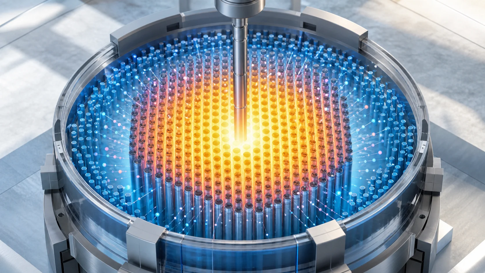
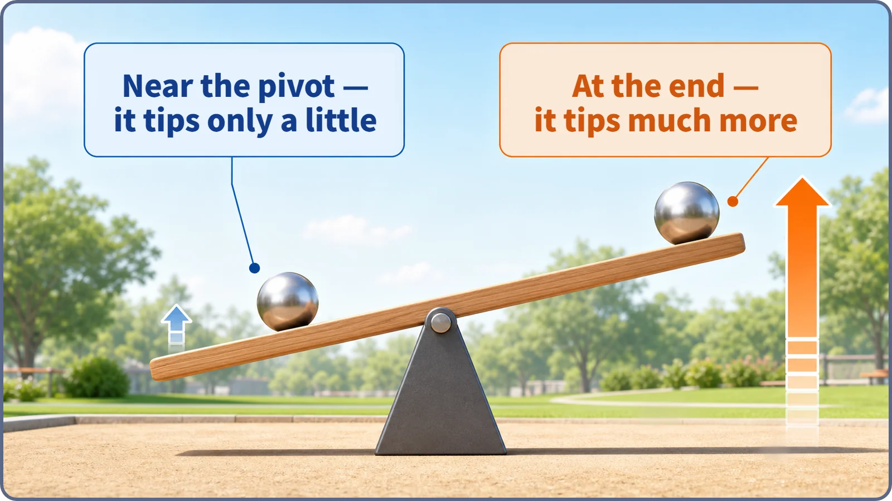
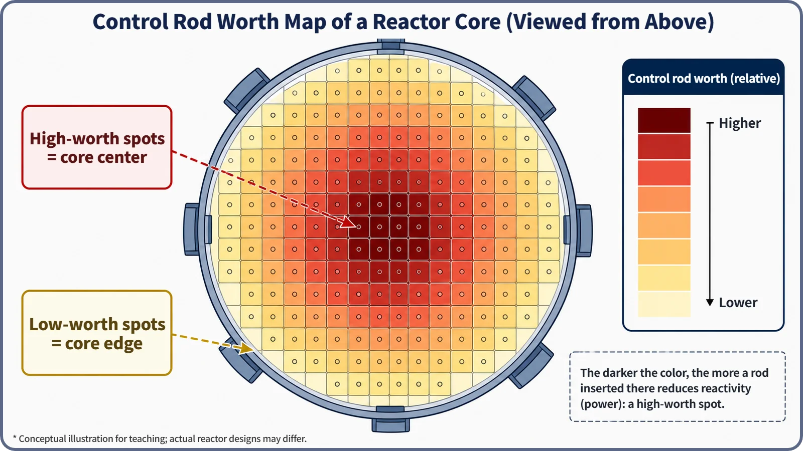

Reactor Kinetics & Reactivity · 115
Why a Weight at the End of a Seesaw Tips It More — What Control Rod Worth Means
The same rod counts for more where neutrons are busiest. Its bell-shaped local worth adds up to the S-curve.

Control rod worth is the change in reactivity a rod produces at a given place in the core, and the same rod is worth more where the neutron flux is busiest, usually near the center. Its local rate, the differential worth, is bell-shaped; adding it up gives the integral worth, which is the familiar S-curve of power versus insertion depth.
Same weight, different spot
As a kid, did you ever set a heavy stone right next to a seesaw's pivot? It barely tilts. Move the same stone to the very end and the seesaw tips much more. The weight hasn't changed; where you put it decides the tilt.
Control rods have exactly this property. Two rods of the same material and length can affect reactivity, and so the reactor's power, very differently depending on where in the core they sit. Nuclear engineers call this position-dependent influence control rod worth.
The stone is the rod; the spot is the place in the core
A seesaw tips more at the end because of leverage. In a core, a similar result comes from a different cause. The neutron flux, a measure of how busily neutrons are moving about, is usually highest near the center and quieter toward the top, bottom and outer edge. A control rod lowers reactivity by absorbing neutrons. Placed where neutrons are busiest, it intercepts more of them and the change in reactivity is large; placed where they are sparse, the same rod intercepts fewer and the change is small. A rod does not physically press on the fuel; it acts only through the share of neutrons it absorbs where it sits.

Where is worth highest?
Picture a map of the core seen from above, shaded darkest where the flux is highest, usually around the middle, and paler toward the edge. That map is also a map of control rod worth: rods near the center have high worth, rods near the edge low worth.

Look more closely and the local worth does not simply grow in proportion to the flux; theory shows it rises much more steeply, roughly with the square of the flux. That square law is an approximation from simplified perturbation theory; real core calculations use more refined methods that also account for the adjoint (importance-weighted) flux. The difference between center and edge is therefore much larger than "the center is a bit busier" would suggest.
Differential and integral worth: the identity of the S-curve
Push a rod steadily from fully withdrawn (0%) to fully inserted (100%) and plot core power, and you get an S-shaped curve: gentle, steepest in the middle, gentle again.
The rate of reactivity change when a rod moves a tiny bit further (say, 1 cm) is the differential rod worth, written dρ/dz. It is largest near the middle of the core and smaller toward the top and bottom: a bell-shaped curve. The total reactivity change accumulated from fully withdrawn down to depth z is the integral rod worth, the differential worth added up from the start:
ρ(z) = ∫₀ᶻ (dρ/dz′) dz′
Adding up a bell-shaped curve builds slowly at first, fastest in the middle and slowly again at the end. That running total is the S-curve.
| Differential rod worth | Integral rod worth | |
|---|---|---|
| Meaning | Reactivity change per small move, dρ/dz | Total reactivity change from 0% to depth z |
| Shape along the core height | Bell-shaped, largest near the middle | S-shaped running total |
| On the S-curve | The slope at a point | The height of the curve |
Telling it apart from neighboring terms
Rod worth vs. reactivity. Reactivity describes how far the whole reactor is from critical balance; rod worth is how much that reactivity changes when you move this rod, a coefficient specific to the rod and its position.
Rod worth vs. material or length. Even the best absorber has low worth where the flux is low, such as near the core edge. Where matters far more than what it is made of.
Rod worth vs. insertion depth. Depth is a position; worth is the reactivity change it produces. Going from 10% to 20% has different worth depending on which part of the core that stretch passes through.
"The highest-worth rod." The rod covering the busiest part of the core has the most worth. Safety reviews check that the reactor can still be shut down for certain by the remaining rods even if that one rod fails to insert.
Why it matters in operation and design
Near the middle of the core, moving a rod even slightly makes power respond strongly; near the edges, larger movements change power less, which suits fine adjustment. Practices differ by reactor type and plant. Designers calculate each rod's worth when choosing the number, layout and insertion order of the rods, so that no single rod distorts the power distribution or causes too abrupt a reactivity change. Rod worth values are also basic inputs for shutdown checks and for assessing accidents in which a rod is unexpectedly withdrawn or ejected, where the case involving the highest-worth rod is generally taken as the most conservative. Acceptance criteria differ by reactor type and regulator.
Two common misconceptions
"Rods of the same material and length have the same effect anywhere." No. Worth varies greatly with position in the core.
"A high-worth rod is a more dangerous rod." No. High worth means the rod controls reactivity more effectively; reviews simply assume, conservatively, that the highest-worth rod might be missing.
Key takeaways
Control rod worth depends on where the rod is: highest where the flux is busiest. The bell-shaped differential worth adds up to the integral worth, the S-curve of power versus insertion depth, and these values underpin shutdown checks and accident assessments.